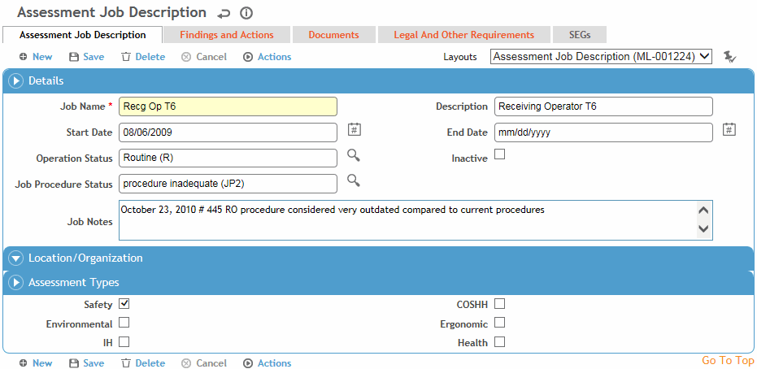

Before you can perform a risk assessment, you must identify the job. You may want to capture jobs that:
have frequent accidents, or where accidents result in critical injuries
have the potential for a severe injury, such as exposure to a harmful substance
are new, changed, or performed infrequently, so that potential hazards, procedures, and controls can be reviewed.
To record a job:
In the menu for any Cloud, click Job Inventory (“Environmental Activities” in the Environmental menu).
Click New.
Alternatively, open an existing job and choose Actions»Copy and Create a New Job. All job data is copied to the new job except for the Job Name, Start and End dates, and any data on the Findings and Actions tab.

Complete the Details and Location/Organization sections for the job.
Select the Assessment Type(s) required for this job. The Cloud that you accessed the job inventory from is selected automatically, but you can clear the selection. The job will only appear in the Job Inventory list(s) in the Clouds it has been associated with (unless the list view is changed to view all inventories).
There can only be one active job of the same name and assessment type linked to the same organizational hierarchy.
The Findings and Actions tab displays all findings and actions associated with this job. These would be findings that are not related to a specific risk assessment; for example, a finding might be that new employees do not fully understand the procedures for the job. The list also includes findings and actions for any incidents, inspections, audits, and IH samples and noise samples linked to the job.
For information about recording a finding and its actions, see Recording a New Finding.
To view an action’s attachment, open the finding and choose Actions»Open Document.
Use the Documents tab to link an external file to a job, such as any established procedures documentation (for more information, see Linking or Importing a Document).
You can filter this list to include documents attached to related assessment records.
Use the Legal and Other Requirements tab to identify any legal or compliance requirements that apply to this job. For more information, see Compliance Management.
Use the SEGs tab to identify any related exposure groups. Employees assigned to this job are automatically enrolled in the SEG. Conversely, if they leave the job, they are removed from the SEG. For more information, see SimilarExposureGroup.
Click Save.
A new, corresponding Risk Assessment record is created.
You are asked if you want to begin working on the Risk Assessment. If you click Yes, you will be taken to that record. Refer to Performing a Medical, Safety, Ergonomic, or Environmental Risk Assessment or Performing an Industrial Hygiene Risk Assessment for completion.
If you click No, you will remain on the Job Inventory record.
A job cannot be deleted, only set to inactive.